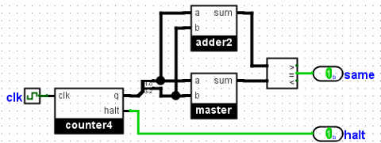

测试多个文件
在课堂场景中，通常会有许多文件需要测试等价性，也不希望逐个阅读每份学生解答的输出。
将比较功能构建到电路中
一种方法是构建一个直接进行比较的测试电路。在测试文件中创建一个额外电路，其中包含参考解答电路。整体测试电路同时包含来自master.circ的子电路，以及位于嵌套电路中的待测解答子电路。将两者接成只有一个输出：只要两个子电路结果一致，该输出就为 1。

现在只需运行 Logisim，并依次替换每个待测文件。对于任何正确解答，唯一输出都应为“1”。
使用重定向和shell脚本
如果熟悉命令行，可以编写 shell 脚本完成这项工作。这里使用重定向（> 操作符）将每个电路的输出保存到文件中。例如，可以用以下两个命令分别收集参考电路和待测电路的输出。
java -jar logisim-evolution.jar test.circ -tty table > out-master.txtjava -jar logisim-evolution.jar test.circ -tty table -sub master.circ query.circ > out-query.txt
现在已经生成两个不同的输出文件，接着可以用专门的比较工具检查它们。在 Linux 或 macOS 下可使用cmp或diff命令行工具；在 Windows 下可使用fc或 WinMerge。
要处理多个待测文件，可以编写一个简单程序（例如 shell 脚本）遍历每个文件并比较输出。下面是在 Linux 的bash中执行此操作的一种写法：
RUN_TEST="java -jar logisim-filename.jar adder-test.circ -tty table"
${RUN_TEST} > output-master.txt
for QUERY_FILE in query*.circ
do
if ${RUN_TEST} -sub ^master.circ ${QUERY_FILE} | cmp -s output-master.txt
then
echo "${QUERY_FILE} OK"
else
echo "${QUERY_FILE} different"
fi
done
下一节： 测试向量。